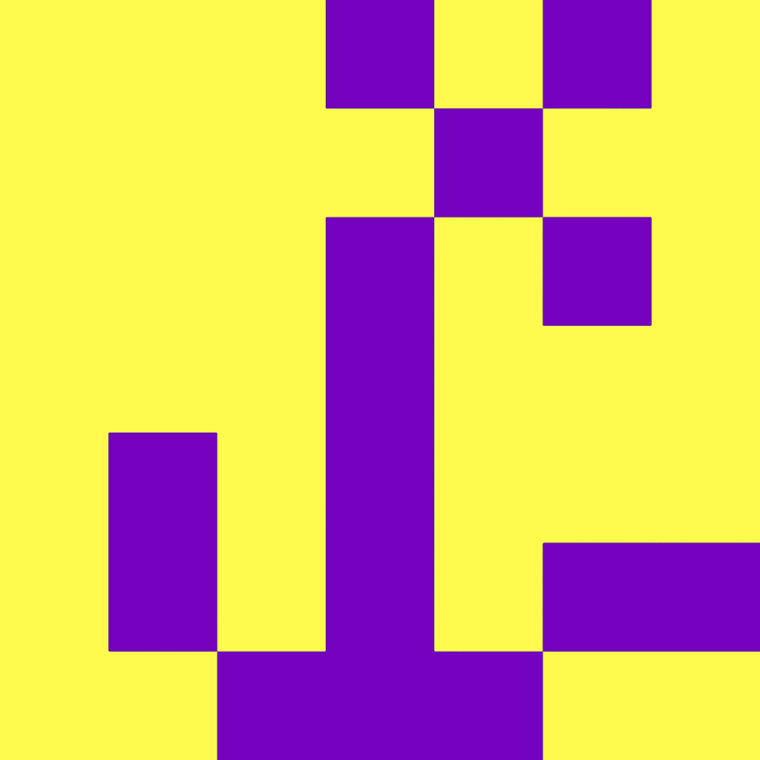

I’ve wanted to escape from home.
Ever since I was a teenager, I've been telling myself that "I gotta try my best." This 'try hard' logic was basically in order NOT to make my mom's life be transmitted to my life.
Her parent was very strict and when she moved out from her parents' place she met a guy, who is not my dad. Then I was made when they were only in two months relationship.
Since then she seems to lament her life. "I will do everything for you, darling. My love, my daughter, I won't let your life be like mine."
Ironically, however, I feel like I'm actually stepping in the same route as her life..Sadly enough, her love was often fettering me. Whenever I feel choked by the shackles, I can't help pitying my life.
(From
An Endless loop)

Likewise, the fact that I'm the eldest girl has classically been a sufficient reason for my parents to reflect on themselves. It was not long ago that I realised those missions have been sitting quite heavy on my stomach. I'm aware that my stomach has been hugely filled with her pure love about me, but maybe some sub-love (some parts of her love) has been sadly a burden to me.
(From Episodes as a k-eldest girl K-eldest girls by Nami)